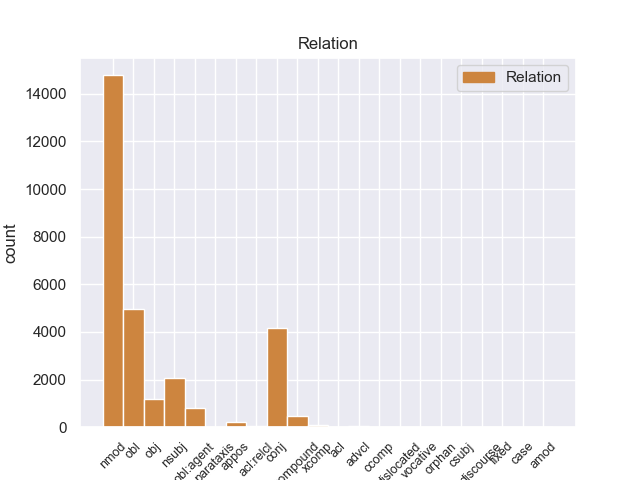
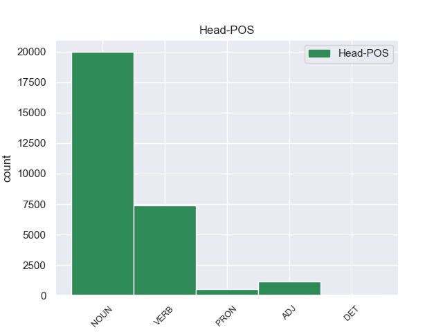
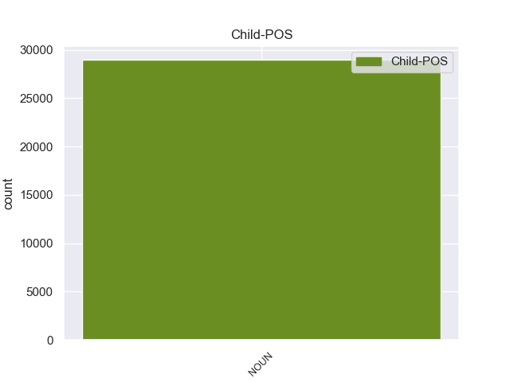

Distribution of features within this leaf



Agreement Rules sorted by frequency.
- When the dependent token is the nominal modifier(nmod) of the head token, and the head token is NOUN and the dependent token is NOUN.
1 Gli _ _ _ _ 0 _ _ _
2 edifici edificio NOUN S Gender=Masc|Number=Plur 0 _ _ _
3 di _ _ _ _ 0 _ _ _
4 il _ _ _ _ 0 _ _ _
5 centro centro NOUN S Gender=Masc|Number=Sing 2 nmod 2:nmod:di _
6 storico _ _ _ _ 0 _ _ _
7 erano _ _ _ _ 0 _ _ _
8 costruiti _ _ _ _ 0 _ _ _
9 con _ _ _ _ 0 _ _ _
10 l’ _ _ _ _ 0 _ _ _
11 argilla _ _ _ _ 0 _ _ _
12 rossa _ _ _ _ 0 _ _ _
13 di _ _ _ _ 0 _ _ _
14 il _ _ _ _ 0 _ _ _
15 deserto _ _ _ _ 0 _ _ _
16 , _ _ _ _ 0 _ _ _
17 un _ _ _ _ 0 _ _ _
18 materiale _ _ _ _ 0 _ _ _
19 molto _ _ _ _ 0 _ _ _
20 fragile _ _ _ _ 0 _ _ _
21 . _ _ _ _ 0 _ _ _
1 Su _ _ _ _ 0 _ _ _
2 le _ _ _ _ 0 _ _ _
3 barche _ _ _ _ 0 _ _ _
4 i _ _ _ _ 0 _ _ _
5 turisti _ _ _ _ 0 _ _ _
6 possono _ _ _ _ 0 _ _ _
7 ascoltare _ _ _ _ 0 _ _ _
8 la _ _ _ _ 0 _ _ _
9 descrizione descrizione NOUN S Gender=Fem|Number=Sing 0 _ _ _
10 e _ _ _ _ 0 _ _ _
11 la _ _ _ _ 0 _ _ _
12 storia storia NOUN S Gender=Fem|Number=Sing 9 conj 7:obj|9:conj:e _
13 di _ _ _ _ 0 _ _ _
14 i _ _ _ _ 0 _ _ _
15 monumenti _ _ _ _ 0 _ _ _
16 che _ _ _ _ 0 _ _ _
17 si _ _ _ _ 0 _ _ _
18 vedono _ _ _ _ 0 _ _ _
19 da _ _ _ _ 0 _ _ _
20 il _ _ _ _ 0 _ _ _
21 fiume _ _ _ _ 0 _ _ _
22 . _ _ _ _ 0 _ _ _
1 Il _ _ _ _ 0 _ _ _
2 25 _ _ _ _ 0 _ _ _
3 dicembre _ _ _ _ 0 _ _ _
4 2003 _ _ _ _ 0 _ _ _
5 , _ _ _ _ 0 _ _ _
6 in _ _ _ _ 0 _ _ _
7 il _ _ _ _ 0 _ _ _
8 sud sud NOUN S Gender=Masc|Number=Sing 14 obl 14:obl:in _
9 di _ _ _ _ 0 _ _ _
10 l’ _ _ _ _ 0 _ _ _
11 Iran _ _ _ _ 0 _ _ _
12 c’ _ _ _ _ 0 _ _ _
13 è _ _ _ _ 0 _ _ _
14 stato essere VERB V Gender=Masc|Number=Sing|Tense=Past|VerbForm=Part 0 _ _ _
15 un _ _ _ _ 0 _ _ _
16 terremoto _ _ _ _ 0 _ _ _
17 molto _ _ _ _ 0 _ _ _
18 grave _ _ _ _ 0 _ _ _
19 . _ _ _ _ 0 _ _ _
1 Gli _ _ _ _ 0 _ _ _
2 edifici edificio NOUN S Gender=Masc|Number=Plur 8 nsubj 8:nsubj _
3 di _ _ _ _ 0 _ _ _
4 il _ _ _ _ 0 _ _ _
5 centro _ _ _ _ 0 _ _ _
6 storico _ _ _ _ 0 _ _ _
7 erano _ _ _ _ 0 _ _ _
8 costruiti costruire VERB V Gender=Masc|Number=Plur|Tense=Past|VerbForm=Part 0 _ _ _
9 con _ _ _ _ 0 _ _ _
10 l’ _ _ _ _ 0 _ _ _
11 argilla _ _ _ _ 0 _ _ _
12 rossa _ _ _ _ 0 _ _ _
13 di _ _ _ _ 0 _ _ _
14 il _ _ _ _ 0 _ _ _
15 deserto _ _ _ _ 0 _ _ _
16 , _ _ _ _ 0 _ _ _
17 un _ _ _ _ 0 _ _ _
18 materiale _ _ _ _ 0 _ _ _
19 molto _ _ _ _ 0 _ _ _
20 fragile _ _ _ _ 0 _ _ _
21 . _ _ _ _ 0 _ _ _
1 Infatti _ _ _ _ 0 _ _ _
2 alcuni _ _ _ _ 0 _ _ _
3 esperti _ _ _ _ 0 _ _ _
4 hanno _ _ _ _ 0 _ _ _
5 organizzato organizzare VERB V Gender=Masc|Number=Sing|Tense=Past|VerbForm=Part 0 _ _ _
6 un _ _ _ _ 0 _ _ _
7 servizio servizio NOUN S Gender=Masc|Number=Sing 5 obj 5:obj _
8 di _ _ _ _ 0 _ _ _
9 trasporto _ _ _ _ 0 _ _ _
10 pubblico _ _ _ _ 0 _ _ _
11 con _ _ _ _ 0 _ _ _
12 le _ _ _ _ 0 _ _ _
13 barche _ _ _ _ 0 _ _ _
14 . _ _ _ _ 0 _ _ _
1 L’ _ _ _ _ 0 _ _ _
2 energia _ _ _ _ 0 _ _ _
3 elettrica _ _ _ _ 0 _ _ _
4 è _ _ _ _ 0 _ _ _
5 prodotta produrre VERB V Gender=Fem|Number=Sing|Tense=Past|VerbForm=Part 0 _ _ _
6 da _ _ _ _ 0 _ _ _
7 le _ _ _ _ 0 _ _ _
8 centrali centrale NOUN S Gender=Fem|Number=Plur 5 obl:agent 5:obl:agent:da _
9 elettriche _ _ _ _ 0 _ _ _
10 ed _ _ _ _ 0 _ _ _
11 è _ _ _ _ 0 _ _ _
12 distribuita _ _ _ _ 0 _ _ _
13 in _ _ _ _ 0 _ _ _
14 tutt’ _ _ _ _ 0 _ _ _
15 Italia _ _ _ _ 0 _ _ _
16 attraverso _ _ _ _ 0 _ _ _
17 la _ _ _ _ 0 _ _ _
18 rete _ _ _ _ 0 _ _ _
19 elettrica _ _ _ _ 0 _ _ _
20 . _ _ _ _ 0 _ _ _
1 Il _ _ _ _ 0 _ _ _
2 riso riso NOUN S Gender=Masc|Number=Sing 4 nsubj 4:nsubj _
3 è _ _ _ _ 0 _ _ _
4 utile utile ADJ A Gender=Masc|Number=Sing 0 _ _ _
5 per _ _ _ _ 0 _ _ _
6 curare _ _ _ _ 0 _ _ _
7 i _ _ _ _ 0 _ _ _
8 disturbi _ _ _ _ 0 _ _ _
9 di _ _ _ _ 0 _ _ _
10 l' _ _ _ _ 0 _ _ _
11 intestino _ _ _ _ 0 _ _ _
12 , _ _ _ _ 0 _ _ _
13 di _ _ _ _ 0 _ _ _
14 lo _ _ _ _ 0 _ _ _
15 stomaco _ _ _ _ 0 _ _ _
16 e _ _ _ _ 0 _ _ _
17 soprattutto _ _ _ _ 0 _ _ _
18 l' _ _ _ _ 0 _ _ _
19 ulcera _ _ _ _ 0 _ _ _
20 . _ _ _ _ 0 _ _ _
1 Il _ _ _ _ 0 _ _ _
2 riso _ _ _ _ 0 _ _ _
3 è _ _ _ _ 0 _ _ _
4 ricco _ _ _ _ 0 _ _ _
5 di _ _ _ _ 0 _ _ _
6 molti _ _ _ _ 0 _ _ _
7 elementi _ _ _ _ 0 _ _ _
8 nutritivi _ _ _ _ 0 _ _ _
9 , _ _ _ _ 0 _ _ _
10 preziosi prezioso ADJ A Gender=Masc|Number=Plur 0 _ _ _
11 per _ _ _ _ 0 _ _ _
12 il _ _ _ _ 0 _ _ _
13 nostro _ _ _ _ 0 _ _ _
14 organismo organismo NOUN S Gender=Masc|Number=Sing 10 obl 10:obl:per SpaceAfter=No
15 , _ _ _ _ 0 _ _ _
16 come _ _ _ _ 0 _ _ _
17 le _ _ _ _ 0 _ _ _
18 proteine _ _ _ _ 0 _ _ _
19 , _ _ _ _ 0 _ _ _
20 i _ _ _ _ 0 _ _ _
21 carboidrati _ _ _ _ 0 _ _ _
22 , _ _ _ _ 0 _ _ _
23 le _ _ _ _ 0 _ _ _
24 vitamine _ _ _ _ 0 _ _ _
25 e _ _ _ _ 0 _ _ _
26 i _ _ _ _ 0 _ _ _
27 sali _ _ _ _ 0 _ _ _
28 minerali _ _ _ _ 0 _ _ _
29 . _ _ _ _ 0 _ _ _
1 I _ _ _ _ 0 _ _ _
2 ricercatori _ _ _ _ 0 _ _ _
3 di _ _ _ _ 0 _ _ _
4 il _ _ _ _ 0 _ _ _
5 Censis _ _ _ _ 0 _ _ _
6 , _ _ _ _ 0 _ _ _
7 Centro _ _ _ _ 0 _ _ _
8 Studi studio NOUN S Gender=Masc|Number=Plur 0 _ _ _
9 Investimenti investimento NOUN S Gender=Masc|Number=Plur 8 compound 8:compound _
10 Sociali _ _ _ _ 0 _ _ _
11 , _ _ _ _ 0 _ _ _
12 hanno _ _ _ _ 0 _ _ _
13 presentato _ _ _ _ 0 _ _ _
14 un _ _ _ _ 0 _ _ _
15 rapporto _ _ _ _ 0 _ _ _
16 su _ _ _ _ 0 _ _ _
17 le _ _ _ _ 0 _ _ _
18 condizioni _ _ _ _ 0 _ _ _
19 di _ _ _ _ 0 _ _ _
20 vita _ _ _ _ 0 _ _ _
21 di _ _ _ _ 0 _ _ _
22 la _ _ _ _ 0 _ _ _
23 popolazione _ _ _ _ 0 _ _ _
24 italiana _ _ _ _ 0 _ _ _
25 in _ _ _ _ 0 _ _ _
26 il _ _ _ _ 0 _ _ _
27 2003 _ _ _ _ 0 _ _ _
28 . _ _ _ _ 0 _ _ _
1 Le _ _ _ _ 0 _ _ _
2 sostanze sostanza NOUN S Gender=Fem|Number=Plur 5 nsubj 5:nsubj _
3 vietate _ _ _ _ 0 _ _ _
4 sono _ _ _ _ 0 _ _ _
5 sostanze sostanza NOUN S Gender=Fem|Number=Plur 0 _ _ _
6 che _ _ _ _ 0 _ _ _
7 modificano _ _ _ _ 0 _ _ _
8 le _ _ _ _ 0 _ _ _
9 capacità _ _ _ _ 0 _ _ _
10 fisiche _ _ _ _ 0 _ _ _
11 di _ _ _ _ 0 _ _ _
12 gli _ _ _ _ 0 _ _ _
13 atleti _ _ _ _ 0 _ _ _
14 e _ _ _ _ 0 _ _ _
15 sono _ _ _ _ 0 _ _ _
16 pericolose _ _ _ _ 0 _ _ _
17 per _ _ _ _ 0 _ _ _
18 la _ _ _ _ 0 _ _ _
19 loro _ _ _ _ 0 _ _ _
20 salute _ _ _ _ 0 _ _ _
21 . _ _ _ _ 0 _ _ _
1 Prima _ _ _ _ 0 _ _ _
2 , _ _ _ _ 0 _ _ _
3 le _ _ _ _ 0 _ _ _
4 squadre _ _ _ _ 0 _ _ _
5 con _ _ _ _ 0 _ _ _
6 più _ _ _ _ 0 _ _ _
7 soldi _ _ _ _ 0 _ _ _
8 costruivano _ _ _ _ 0 _ _ _
9 e _ _ _ _ 0 _ _ _
10 usavano _ _ _ _ 0 _ _ _
11 due _ _ _ _ 0 _ _ _
12 motori _ _ _ _ 0 _ _ _
13 , _ _ _ _ 0 _ _ _
14 uno uno PRON PI Gender=Masc|Number=Sing|PronType=Ind 0 _ _ _
15 per _ _ _ _ 0 _ _ _
16 il _ _ _ _ 0 _ _ _
17 giro giro NOUN S Gender=Masc|Number=Sing 14 nmod 14:nmod:per _
18 di _ _ _ _ 0 _ _ _
19 qualifica _ _ _ _ 0 _ _ _
20 e _ _ _ _ 0 _ _ _
21 uno _ _ _ _ 0 _ _ _
22 per _ _ _ _ 0 _ _ _
23 la _ _ _ _ 0 _ _ _
24 gara _ _ _ _ 0 _ _ _
25 . _ _ _ _ 0 _ _ _
1 Per _ _ _ _ 0 _ _ _
2 esempio _ _ _ _ 0 _ _ _
3 Mina _ _ _ _ 0 _ _ _
4 ha _ _ _ _ 0 _ _ _
5 reso _ _ _ _ 0 _ _ _
6 famosa _ _ _ _ 0 _ _ _
7 la _ _ _ _ 0 _ _ _
8 canzone canzone NOUN S Gender=Fem|Number=Sing 0 _ _ _
9 di _ _ _ _ 0 _ _ _
10 Fabrizio _ _ _ _ 0 _ _ _
11 De _ _ _ _ 0 _ _ _
12 Andrè _ _ _ _ 0 _ _ _
13 La _ _ _ _ 0 _ _ _
14 canzone canzone NOUN S Gender=Fem|Number=Sing 8 appos 8:appos _
15 di _ _ _ _ 0 _ _ _
16 Marinella _ _ _ _ 0 _ _ _
17 . _ _ _ _ 0 _ _ _
1 La _ _ _ _ 0 _ _ _
2 giuria _ _ _ _ 0 _ _ _
3 assegna _ _ _ _ 0 _ _ _
4 anche _ _ _ _ 0 _ _ _
5 altri _ _ _ _ 0 _ _ _
6 premi premio NOUN S Gender=Masc|Number=Plur 0 _ _ _
7 : _ _ _ _ 0 _ _ _
8 a _ _ _ _ 0 _ _ _
9 il _ _ _ _ 0 _ _ _
10 miglior _ _ _ _ 0 _ _ _
11 regista regista NOUN S Gender=Masc|Number=Sing 6 obl 6:obl:a SpaceAfter=No
12 , _ _ _ _ 0 _ _ _
13 a _ _ _ _ 0 _ _ _
14 gli _ _ _ _ 0 _ _ _
15 attori _ _ _ _ 0 _ _ _
16 più _ _ _ _ 0 _ _ _
17 bravi _ _ _ _ 0 _ _ _
18 , _ _ _ _ 0 _ _ _
19 a _ _ _ _ 0 _ _ _
20 la _ _ _ _ 0 _ _ _
21 storia _ _ _ _ 0 _ _ _
22 più _ _ _ _ 0 _ _ _
23 bella _ _ _ _ 0 _ _ _
24 e _ _ _ _ 0 _ _ _
25 alcuni _ _ _ _ 0 _ _ _
26 premi _ _ _ _ 0 _ _ _
27 speciali _ _ _ _ 0 _ _ _
28 . _ _ _ _ 0 _ _ _
1 Il _ _ _ _ 0 _ _ _
2 23 _ _ _ _ 0 _ _ _
3 settembre _ _ _ _ 0 _ _ _
4 2005 _ _ _ _ 0 _ _ _
5 , _ _ _ _ 0 _ _ _
6 il _ _ _ _ 0 _ _ _
7 Presidente _ _ _ _ 0 _ _ _
8 di _ _ _ _ 0 _ _ _
9 la _ _ _ _ 0 _ _ _
10 Repubblica _ _ _ _ 0 _ _ _
11 , _ _ _ _ 0 _ _ _
12 Carlo _ _ _ _ 0 _ _ _
13 Azeglio _ _ _ _ 0 _ _ _
14 Ciampi _ _ _ _ 0 _ _ _
15 , _ _ _ _ 0 _ _ _
16 ha _ _ _ _ 0 _ _ _
17 nominato nominare VERB V Gender=Masc|Number=Sing|Tense=Past|VerbForm=Part 0 _ _ _
18 Giorgio _ _ _ _ 0 _ _ _
19 Napolitano _ _ _ _ 0 _ _ _
20 senatore senatore NOUN S Gender=Masc|Number=Sing 17 xcomp 17:xcomp _
21 a _ _ _ _ 0 _ _ _
22 vita _ _ _ _ 0 _ _ _
23 . _ _ _ _ 0 _ _ _
1 Per _ _ _ _ 0 _ _ _
2 esempio _ _ _ _ 0 _ _ _
3 , _ _ _ _ 0 _ _ _
4 per _ _ _ _ 0 _ _ _
5 i _ _ _ _ 0 _ _ _
6 bambini _ _ _ _ 0 _ _ _
7 piccoli _ _ _ _ 0 _ _ _
8 i _ _ _ _ 0 _ _ _
9 giocattoli giocattolo NOUN S Gender=Masc|Number=Plur 12 nsubj 12:nsubj _
10 sicuri _ _ _ _ 0 _ _ _
11 sono _ _ _ _ 0 _ _ _
12 quelli quello PRON PD Gender=Masc|Number=Plur|PronType=Dem 0 _ _ _
13 che _ _ _ _ 0 _ _ _
14 non _ _ _ _ 0 _ _ _
15 hanno _ _ _ _ 0 _ _ _
16 parti _ _ _ _ 0 _ _ _
17 troppo _ _ _ _ 0 _ _ _
18 piccole _ _ _ _ 0 _ _ _
19 . _ _ _ _ 0 _ _ _
1 Paolo _ _ _ _ 0 _ _ _
2 si _ _ _ _ 0 _ _ _
3 muove _ _ _ _ 0 _ _ _
4 con _ _ _ _ 0 _ _ _
5 difficoltà _ _ _ _ 0 _ _ _
6 , _ _ _ _ 0 _ _ _
7 ma _ _ _ _ 0 _ _ _
8 è _ _ _ _ 0 _ _ _
9 sempre _ _ _ _ 0 _ _ _
10 allegro allegro ADJ A Gender=Masc|Number=Sing 0 _ _ _
11 e _ _ _ _ 0 _ _ _
12 di _ _ _ _ 0 _ _ _
13 buon _ _ _ _ 0 _ _ _
14 umore umore NOUN S Gender=Masc|Number=Sing 10 conj 10:conj:e SpaceAfter=No
15 . _ _ _ _ 0 _ _ _
1 Wablieft _ _ _ _ 0 _ _ _
2 è _ _ _ _ 0 _ _ _
3 scritto _ _ _ _ 0 _ _ _
4 in _ _ _ _ 0 _ _ _
5 lingua lingua NOUN S Gender=Fem|Number=Sing 0 _ _ _
6 fiamminga _ _ _ _ 0 _ _ _
7 , _ _ _ _ 0 _ _ _
8 che _ _ _ _ 0 _ _ _
9 è _ _ _ _ 0 _ _ _
10 una _ _ _ _ 0 _ _ _
11 lingua lingua NOUN S Gender=Fem|Number=Sing 5 acl:relcl 5:acl:relcl _
12 parlata _ _ _ _ 0 _ _ _
13 in _ _ _ _ 0 _ _ _
14 Belgio _ _ _ _ 0 _ _ _
15 . _ _ _ _ 0 _ _ _
1 Quello _ _ _ _ 0 _ _ _
2 che _ _ _ _ 0 _ _ _
3 sto _ _ _ _ 0 _ _ _
4 imparando _ _ _ _ 0 _ _ _
5 adesso _ _ _ _ 0 _ _ _
6 è _ _ _ _ 0 _ _ _
7 che _ _ _ _ 0 _ _ _
8 , _ _ _ _ 0 _ _ _
9 se _ _ _ _ 0 _ _ _
10 l' _ _ _ _ 0 _ _ _
11 Africa _ _ _ _ 0 _ _ _
12 spera _ _ _ _ 0 _ _ _
13 di _ _ _ _ 0 _ _ _
14 innescare _ _ _ _ 0 _ _ _
15 una _ _ _ _ 0 _ _ _
16 trasformazione _ _ _ _ 0 _ _ _
17 agricola _ _ _ _ 0 _ _ _
18 , _ _ _ _ 0 _ _ _
19 i _ _ _ _ 0 _ _ _
20 paesi _ _ _ _ 0 _ _ _
21 di _ _ _ _ 0 _ _ _
22 il _ _ _ _ 0 _ _ _
23 continente _ _ _ _ 0 _ _ _
24 dovranno _ _ _ _ 0 _ _ _
25 necessariamente _ _ _ _ 0 _ _ _
26 rimuovere _ _ _ _ 0 _ _ _
27 innanzitutto _ _ _ _ 0 _ _ _
28 uno uno PRON PI Gender=Masc|Number=Sing|PronType=Ind 0 _ _ _
29 di _ _ _ _ 0 _ _ _
30 i _ _ _ _ 0 _ _ _
31 principali _ _ _ _ 0 _ _ _
32 ostacoli _ _ _ _ 0 _ _ _
33 che _ _ _ _ 0 _ _ _
34 impedisce _ _ _ _ 0 _ _ _
35 a _ _ _ _ 0 _ _ _
36 il _ _ _ _ 0 _ _ _
37 settore _ _ _ _ 0 _ _ _
38 di _ _ _ _ 0 _ _ _
39 progredire _ _ _ _ 0 _ _ _
40 , _ _ _ _ 0 _ _ _
41 ovvero _ _ _ _ 0 _ _ _
42 un _ _ _ _ 0 _ _ _
43 enorme _ _ _ _ 0 _ _ _
44 divario divario NOUN S Gender=Masc|Number=Sing 28 conj 26:obj|28:conj:ovvero _
45 di _ _ _ _ 0 _ _ _
46 genere _ _ _ _ 0 _ _ _
47 . _ _ _ _ 0 _ _ _
1 Alcuni _ _ _ _ 0 _ _ _
2 commentatori _ _ _ _ 0 _ _ _
3 hanno _ _ _ _ 0 _ _ _
4 visto vedere VERB V Gender=Masc|Number=Sing|Tense=Past|VerbForm=Part 0 _ _ _
5 questo _ _ _ _ 0 _ _ _
6 cambiamento _ _ _ _ 0 _ _ _
7 di _ _ _ _ 0 _ _ _
8 tono _ _ _ _ 0 _ _ _
9 come _ _ _ _ 0 _ _ _
10 una _ _ _ _ 0 _ _ _
11 prova _ _ _ _ 0 _ _ _
12 di _ _ _ _ 0 _ _ _
13 una _ _ _ _ 0 _ _ _
14 visione _ _ _ _ 0 _ _ _
15 di _ _ _ _ 0 _ _ _
16 la _ _ _ _ 0 _ _ _
17 vita _ _ _ _ 0 _ _ _
18 più _ _ _ _ 0 _ _ _
19 serena _ _ _ _ 0 _ _ _
20 da _ _ _ _ 0 _ _ _
21 parte _ _ _ _ 0 _ _ _
22 di _ _ _ _ 0 _ _ _
23 Shakespeare _ _ _ _ 0 _ _ _
24 , _ _ _ _ 0 _ _ _
25 ma _ _ _ _ 0 _ _ _
26 potrebbe _ _ _ _ 0 _ _ _
27 anche _ _ _ _ 0 _ _ _
28 solo _ _ _ _ 0 _ _ _
29 essere _ _ _ _ 0 _ _ _
30 un _ _ _ _ 0 _ _ _
31 mero _ _ _ _ 0 _ _ _
32 riflesso riflesso NOUN S Gender=Masc|Number=Sing 4 conj 4:conj:ma _
33 di _ _ _ _ 0 _ _ _
34 la _ _ _ _ 0 _ _ _
35 moda _ _ _ _ 0 _ _ _
36 teatrale _ _ _ _ 0 _ _ _
37 di _ _ _ _ 0 _ _ _
38 l' _ _ _ _ 0 _ _ _
39 epoca _ _ _ _ 0 _ _ _
40 . _ _ _ _ 0 _ _ _
1 I _ _ _ _ 0 _ _ _
2 rappresentanti _ _ _ _ 0 _ _ _
3 di _ _ _ _ 0 _ _ _
4 la _ _ _ _ 0 _ _ _
5 maggioranza _ _ _ _ 0 _ _ _
6 hanno _ _ _ _ 0 _ _ _
7 eletto eleggere VERB V Gender=Masc|Number=Sing|Tense=Past|VerbForm=Part 0 _ _ _
8 Giorgio _ _ _ _ 0 _ _ _
9 Napolitano _ _ _ _ 0 _ _ _
10 Presidente _ _ _ _ 0 _ _ _
11 di _ _ _ _ 0 _ _ _
12 la _ _ _ _ 0 _ _ _
13 Repubblica _ _ _ _ 0 _ _ _
14 perché _ _ _ _ 0 _ _ _
15 è _ _ _ _ 0 _ _ _
16 un _ _ _ _ 0 _ _ _
17 uomo uomo NOUN S Gender=Masc|Number=Sing 7 advcl 7:advcl:perché _
18 ricco _ _ _ _ 0 _ _ _
19 di _ _ _ _ 0 _ _ _
20 esperienza _ _ _ _ 0 _ _ _
21 e _ _ _ _ 0 _ _ _
22 di _ _ _ _ 0 _ _ _
23 equilibrio _ _ _ _ 0 _ _ _
24 . _ _ _ _ 0 _ _ _
1 Ha _ _ _ _ 0 _ _ _
2 scritto _ _ _ _ 0 _ _ _
3 molti _ _ _ _ 0 _ _ _
4 libri libro NOUN S Gender=Masc|Number=Plur 0 _ _ _
5 per _ _ _ _ 0 _ _ _
6 ragazzi _ _ _ _ 0 _ _ _
7 : _ _ _ _ 0 _ _ _
8 i _ _ _ _ 0 _ _ _
9 Racconti Racconti NOUN S Gender=Masc|Number=Plur 4 parataxis 4:parataxis _
10 di _ _ _ _ 0 _ _ _
11 le _ _ _ _ 0 _ _ _
12 fate _ _ _ _ 0 _ _ _
13 di _ _ _ _ 0 _ _ _
14 il _ _ _ _ 0 _ _ _
15 1875 _ _ _ _ 0 _ _ _
16 , _ _ _ _ 0 _ _ _
17 Il _ _ _ _ 0 _ _ _
18 viaggio _ _ _ _ 0 _ _ _
19 per _ _ _ _ 0 _ _ _
20 l' _ _ _ _ 0 _ _ _
21 Italia _ _ _ _ 0 _ _ _
22 di _ _ _ _ 0 _ _ _
23 Giannettino _ _ _ _ 0 _ _ _
24 di _ _ _ _ 0 _ _ _
25 il _ _ _ _ 0 _ _ _
26 1876 _ _ _ _ 0 _ _ _
27 e _ _ _ _ 0 _ _ _
28 Minuzzolo _ _ _ _ 0 _ _ _
29 di _ _ _ _ 0 _ _ _
30 il _ _ _ _ 0 _ _ _
31 1878 _ _ _ _ 0 _ _ _
32 . _ _ _ _ 0 _ _ _
1 L’ _ _ _ _ 0 _ _ _
2 Onu _ _ _ _ 0 _ _ _
3 , _ _ _ _ 0 _ _ _
4 Organizzazione _ _ _ _ 0 _ _ _
5 di _ _ _ _ 0 _ _ _
6 le _ _ _ _ 0 _ _ _
7 Nazioni _ _ _ _ 0 _ _ _
8 Unite _ _ _ _ 0 _ _ _
9 , _ _ _ _ 0 _ _ _
10 ha _ _ _ _ 0 _ _ _
11 deciso decidere VERB V Gender=Masc|Number=Sing|Tense=Past|VerbForm=Part 0 _ _ _
12 che _ _ _ _ 0 _ _ _
13 il _ _ _ _ 0 _ _ _
14 2004 _ _ _ _ 0 _ _ _
15 è _ _ _ _ 0 _ _ _
16 l’ _ _ _ _ 0 _ _ _
17 anno anno NOUN S Gender=Masc|Number=Sing 11 ccomp 11:ccomp _
18 internazionale _ _ _ _ 0 _ _ _
19 di _ _ _ _ 0 _ _ _
20 il _ _ _ _ 0 _ _ _
21 riso _ _ _ _ 0 _ _ _
1 La _ _ _ _ 0 _ _ _
2 febbre _ _ _ _ 0 _ _ _
3 dengue _ _ _ _ 0 _ _ _
4 è _ _ _ _ 0 _ _ _
5 una uno PRON PI Gender=Fem|Number=Sing|PronType=Ind 0 _ _ _
6 di _ _ _ _ 0 _ _ _
7 le _ _ _ _ 0 _ _ _
8 principali _ _ _ _ 0 _ _ _
9 cause _ _ _ _ 0 _ _ _
10 di _ _ _ _ 0 _ _ _
11 malattia _ _ _ _ 0 _ _ _
12 e _ _ _ _ 0 _ _ _
13 morte _ _ _ _ 0 _ _ _
14 in _ _ _ _ 0 _ _ _
15 le _ _ _ _ 0 _ _ _
16 aree area NOUN S Gender=Fem|Number=Plur 5 obl 5:obl:in _
17 tropicali _ _ _ _ 0 _ _ _
18 e _ _ _ _ 0 _ _ _
19 subtropicali _ _ _ _ 0 _ _ _
20 e _ _ _ _ 0 _ _ _
21 sono _ _ _ _ 0 _ _ _
22 circa _ _ _ _ 0 _ _ _
23 100 _ _ _ _ 0 _ _ _
24 milioni _ _ _ _ 0 _ _ _
25 le _ _ _ _ 0 _ _ _
26 persone _ _ _ _ 0 _ _ _
27 che _ _ _ _ 0 _ _ _
28 vengono _ _ _ _ 0 _ _ _
29 infettate _ _ _ _ 0 _ _ _
30 ogni _ _ _ _ 0 _ _ _
31 anno _ _ _ _ 0 _ _ _
32 . _ _ _ _ 0 _ _ _
1 Spetta _ _ _ _ 0 _ _ _
2 ora _ _ _ _ 0 _ _ _
3 a _ _ _ _ 0 _ _ _
4 le _ _ _ _ 0 _ _ _
5 agenzie _ _ _ _ 0 _ _ _
6 governative _ _ _ _ 0 _ _ _
7 facilitar _ _ _ _ 0 _ _ _
8 ne _ _ _ _ 0 _ _ _
9 lo lo PRON PC Clitic=Yes|Gender=Masc|Number=Sing|Person=3|PronType=Prs 0 _ _ _
10 sviluppo sviluppo NOUN S Gender=Masc|Number=Sing 9 advcl 9:advcl SpaceAfter=No
11 . _ _ _ _ 0 _ _ _
1 Questa _ _ _ _ 0 _ _ _
2 non _ _ _ _ 0 _ _ _
3 è _ _ _ _ 0 _ _ _
4 la _ _ _ _ 0 _ _ _
5 prima _ _ _ _ 0 _ _ _
6 volta volta NOUN S Gender=Fem|Number=Sing 0 _ _ _
7 che _ _ _ _ 0 _ _ _
8 i _ _ _ _ 0 _ _ _
9 paesi _ _ _ _ 0 _ _ _
10 in _ _ _ _ 0 _ _ _
11 via _ _ _ _ 0 _ _ _
12 di _ _ _ _ 0 _ _ _
13 sviluppo _ _ _ _ 0 _ _ _
14 sono _ _ _ _ 0 _ _ _
15 vittime vittima NOUN S Gender=Fem|Number=Plur 6 advcl 6:advcl:che _
16 di _ _ _ _ 0 _ _ _
17 i _ _ _ _ 0 _ _ _
18 repentini _ _ _ _ 0 _ _ _
19 sbalzi _ _ _ _ 0 _ _ _
20 d' _ _ _ _ 0 _ _ _
21 umore _ _ _ _ 0 _ _ _
22 di _ _ _ _ 0 _ _ _
23 i _ _ _ _ 0 _ _ _
24 mercati _ _ _ _ 0 _ _ _
25 finanziari _ _ _ _ 0 _ _ _
26 globali _ _ _ _ 0 _ _ _
27 . _ _ _ _ 0 _ _ _
1 Alcuni _ _ _ _ 0 _ _ _
2 inquinanti inquinante NOUN S Gender=Masc|Number=Plur 5 dislocated 5:dislocated _
3 li _ _ _ _ 0 _ _ _
4 abbiamo _ _ _ _ 0 _ _ _
5 creati creare VERB V Gender=Masc|Number=Plur|Tense=Past|VerbForm=Part 0 _ _ _
6 noi _ _ _ _ 0 _ _ _
7 , _ _ _ _ 0 _ _ _
8 molecole _ _ _ _ 0 _ _ _
9 come _ _ _ _ 0 _ _ _
10 i _ _ _ _ 0 _ _ _
11 PCB _ _ _ _ 0 _ _ _
12 , _ _ _ _ 0 _ _ _
13 che _ _ _ _ 0 _ _ _
14 il _ _ _ _ 0 _ _ _
15 nostro _ _ _ _ 0 _ _ _
16 organismo _ _ _ _ 0 _ _ _
17 non _ _ _ _ 0 _ _ _
18 riesce _ _ _ _ 0 _ _ _
19 a _ _ _ _ 0 _ _ _
20 scindere _ _ _ _ 0 _ _ _
21 , _ _ _ _ 0 _ _ _
22 e _ _ _ _ 0 _ _ _
23 che _ _ _ _ 0 _ _ _
24 finiscono _ _ _ _ 0 _ _ _
25 a _ _ _ _ 0 _ _ _
26 la _ _ _ _ 0 _ _ _
27 base _ _ _ _ 0 _ _ _
28 di _ _ _ _ 0 _ _ _
29 quella _ _ _ _ 0 _ _ _
30 piramide _ _ _ _ 0 _ _ _
31 , _ _ _ _ 0 _ _ _
32 e _ _ _ _ 0 _ _ _
33 risalgono _ _ _ _ 0 _ _ _
34 , _ _ _ _ 0 _ _ _
35 e _ _ _ _ 0 _ _ _
36 in _ _ _ _ 0 _ _ _
37 quel _ _ _ _ 0 _ _ _
38 modo _ _ _ _ 0 _ _ _
39 vengono _ _ _ _ 0 _ _ _
40 passati _ _ _ _ 0 _ _ _
41 verso _ _ _ _ 0 _ _ _
42 l' _ _ _ _ 0 _ _ _
43 alto _ _ _ _ 0 _ _ _
44 , _ _ _ _ 0 _ _ _
45 a _ _ _ _ 0 _ _ _
46 i _ _ _ _ 0 _ _ _
47 predatori _ _ _ _ 0 _ _ _
48 fino _ _ _ _ 0 _ _ _
49 a _ _ _ _ 0 _ _ _
50 i _ _ _ _ 0 _ _ _
51 predatori _ _ _ _ 0 _ _ _
52 in _ _ _ _ 0 _ _ _
53 cima _ _ _ _ 0 _ _ _
54 a _ _ _ _ 0 _ _ _
55 la _ _ _ _ 0 _ _ _
56 piramide _ _ _ _ 0 _ _ _
57 . _ _ _ _ 0 _ _ _
1 Ringrazio _ _ _ _ 0 _ _ _
2 innanzi _ _ _ _ 0 _ _ _
3 tutto _ _ _ _ 0 _ _ _
4 il _ _ _ _ 0 _ _ _
5 relatore _ _ _ _ 0 _ _ _
6 per _ _ _ _ 0 _ _ _
7 il _ _ _ _ 0 _ _ _
8 suo _ _ _ _ 0 _ _ _
9 lavoro _ _ _ _ 0 _ _ _
10 estremamente _ _ _ _ 0 _ _ _
11 preciso _ _ _ _ 0 _ _ _
12 e _ _ _ _ 0 _ _ _
13 tecnico _ _ _ _ 0 _ _ _
14 su _ _ _ _ 0 _ _ _
15 il _ _ _ _ 0 _ _ _
16 fascicolo _ _ _ _ 0 _ _ _
17 in _ _ _ _ 0 _ _ _
18 parola _ _ _ _ 0 _ _ _
19 , _ _ _ _ 0 _ _ _
20 e _ _ _ _ 0 _ _ _
21 in _ _ _ _ 0 _ _ _
22 secondo _ _ _ _ 0 _ _ _
23 luogo _ _ _ _ 0 _ _ _
24 la _ _ _ _ 0 _ _ _
25 commissione commissione NOUN S Gender=Fem|Number=Sing 0 _ _ _
26 per _ _ _ _ 0 _ _ _
27 la _ _ _ _ 0 _ _ _
28 proposta proposta NOUN S Gender=Fem|Number=Sing 25 orphan 25:orphan _
29 presentata _ _ _ _ 0 _ _ _
30 . _ _ _ _ 0 _ _ _
1 In _ _ _ _ 0 _ _ _
2 l’ _ _ _ _ 0 _ _ _
3 Assemblea _ _ _ _ 0 _ _ _
4 Costituente _ _ _ _ 0 _ _ _
5 sono _ _ _ _ 0 _ _ _
6 state _ _ _ _ 0 _ _ _
7 elette eleggere VERB V Gender=Fem|Number=Plur|Tense=Past|VerbForm=Part 0 _ _ _
8 556 _ _ _ _ 0 _ _ _
9 persone _ _ _ _ 0 _ _ _
10 : _ _ _ _ 0 _ _ _
11 21 _ _ _ _ 0 _ _ _
12 di _ _ _ _ 0 _ _ _
13 queste _ _ _ _ 0 _ _ _
14 persone _ _ _ _ 0 _ _ _
15 erano _ _ _ _ 0 _ _ _
16 donne donna NOUN S Gender=Fem|Number=Plur 7 parataxis 7:parataxis SpaceAfter=No
17 . _ _ _ _ 0 _ _ _
1 Controlliamo _ _ _ _ 0 _ _ _
2 sempre _ _ _ _ 0 _ _ _
3 la _ _ _ _ 0 _ _ _
4 data _ _ _ _ 0 _ _ _
5 di _ _ _ _ 0 _ _ _
6 scadenza _ _ _ _ 0 _ _ _
7 di _ _ _ _ 0 _ _ _
8 gli _ _ _ _ 0 _ _ _
9 alimenti _ _ _ _ 0 _ _ _
10 , _ _ _ _ 0 _ _ _
11 soprattutto _ _ _ _ 0 _ _ _
12 di _ _ _ _ 0 _ _ _
13 quelli quello PRON PD Gender=Masc|Number=Plur|PronType=Dem 0 _ _ _
14 che _ _ _ _ 0 _ _ _
15 si _ _ _ _ 0 _ _ _
16 rovinano _ _ _ _ 0 _ _ _
17 in _ _ _ _ 0 _ _ _
18 poco _ _ _ _ 0 _ _ _
19 tempo _ _ _ _ 0 _ _ _
20 , _ _ _ _ 0 _ _ _
21 per _ _ _ _ 0 _ _ _
22 esempio _ _ _ _ 0 _ _ _
23 il _ _ _ _ 0 _ _ _
24 latte latte NOUN S Gender=Masc|Number=Sing 13 appos 13:appos _
25 e _ _ _ _ 0 _ _ _
26 i _ _ _ _ 0 _ _ _
27 formaggi _ _ _ _ 0 _ _ _
28 freschi _ _ _ _ 0 _ _ _
29 . _ _ _ _ 0 _ _ _
1 Signor signore NOUN S Gender=Masc|Number=Sing 9 vocative 9:vocative _
2 presidente _ _ _ _ 0 _ _ _
3 , _ _ _ _ 0 _ _ _
4 è _ _ _ _ 0 _ _ _
5 per _ _ _ _ 0 _ _ _
6 me _ _ _ _ 0 _ _ _
7 un _ _ _ _ 0 _ _ _
8 particolare _ _ _ _ 0 _ _ _
9 piacere piacere NOUN S Gender=Masc|Number=Sing 0 _ _ _
10 poter _ _ _ _ 0 _ _ _
11 tenere _ _ _ _ 0 _ _ _
12 il _ _ _ _ 0 _ _ _
13 mio _ _ _ _ 0 _ _ _
14 primo _ _ _ _ 0 _ _ _
15 intervento _ _ _ _ 0 _ _ _
16 a _ _ _ _ 0 _ _ _
17 il _ _ _ _ 0 _ _ _
18 parlamento _ _ _ _ 0 _ _ _
19 europeo _ _ _ _ 0 _ _ _
20 su _ _ _ _ 0 _ _ _
21 il _ _ _ _ 0 _ _ _
22 tema _ _ _ _ 0 _ _ _
23 considerato _ _ _ _ 0 _ _ _
24 il _ _ _ _ 0 _ _ _
25 più _ _ _ _ 0 _ _ _
26 importante _ _ _ _ 0 _ _ _
27 in _ _ _ _ 0 _ _ _
28 la _ _ _ _ 0 _ _ _
29 regione _ _ _ _ 0 _ _ _
30 di _ _ _ _ 0 _ _ _
31 il _ _ _ _ 0 _ _ _
32 Regno _ _ _ _ 0 _ _ _
33 Unito _ _ _ _ 0 _ _ _
34 che _ _ _ _ 0 _ _ _
35 io _ _ _ _ 0 _ _ _
36 rappresento _ _ _ _ 0 _ _ _
37 in _ _ _ _ 0 _ _ _
38 questo _ _ _ _ 0 _ _ _
39 parlamento _ _ _ _ 0 _ _ _
40 , _ _ _ _ 0 _ _ _
41 il _ _ _ _ 0 _ _ _
42 Galles _ _ _ _ 0 _ _ _
43 . _ _ _ _ 0 _ _ _
1 Ma _ _ _ _ 0 _ _ _
2 quanto _ _ _ _ 0 _ _ _
3 ci _ _ _ _ 0 _ _ _
4 metteranno _ _ _ _ 0 _ _ _
5 i _ _ _ _ 0 _ _ _
6 governi _ _ _ _ 0 _ _ _
7 ad _ _ _ _ 0 _ _ _
8 agire _ _ _ _ 0 _ _ _
9 resta resta NOUN S Gender=Fem|Number=Sing 0 _ _ _
10 una _ _ _ _ 0 _ _ _
11 questione questione NOUN S Gender=Fem|Number=Sing 9 acl 9:acl _
12 di _ _ _ _ 0 _ _ _
13 il _ _ _ _ 0 _ _ _
14 tutto _ _ _ _ 0 _ _ _
15 aperta _ _ _ _ 0 _ _ _
16 . _ _ _ _ 0 _ _ _
1 Ora _ _ _ _ 0 _ _ _
2 , _ _ _ _ 0 _ _ _
3 signor signore NOUN S Gender=Masc|Number=Sing 8 vocative 8:vocative _
4 commissario _ _ _ _ 0 _ _ _
5 , _ _ _ _ 0 _ _ _
6 è _ _ _ _ 0 _ _ _
7 finalmente _ _ _ _ 0 _ _ _
8 giunto giungere VERB V Gender=Masc|Number=Sing|Tense=Past|VerbForm=Part 0 _ _ _
9 il _ _ _ _ 0 _ _ _
10 momento _ _ _ _ 0 _ _ _
11 di _ _ _ _ 0 _ _ _
12 applicare _ _ _ _ 0 _ _ _
13 i _ _ _ _ 0 _ _ _
14 programmi _ _ _ _ 0 _ _ _
15 : _ _ _ _ 0 _ _ _
1 I _ _ _ _ 0 _ _ _
2 suoi _ _ _ _ 0 _ _ _
3 personaggi _ _ _ _ 0 _ _ _
4 diventano _ _ _ _ 0 _ _ _
5 più _ _ _ _ 0 _ _ _
6 complessi _ _ _ _ 0 _ _ _
7 e _ _ _ _ 0 _ _ _
8 teneri _ _ _ _ 0 _ _ _
9 man mano NOUN S Gender=Fem|Number=Sing 0 _ _ _
10 mano mano NOUN S Gender=Fem|Number=Sing 9 fixed 9:fixed _
11 che _ _ _ _ 0 _ _ _
12 passa _ _ _ _ 0 _ _ _
13 abilmente _ _ _ _ 0 _ _ _
14 da _ _ _ _ 0 _ _ _
15 le _ _ _ _ 0 _ _ _
16 scene _ _ _ _ 0 _ _ _
17 comiche _ _ _ _ 0 _ _ _
18 a _ _ _ _ 0 _ _ _
19 quelle _ _ _ _ 0 _ _ _
20 serie _ _ _ _ 0 _ _ _
21 , _ _ _ _ 0 _ _ _
22 da _ _ _ _ 0 _ _ _
23 la _ _ _ _ 0 _ _ _
24 prosa _ _ _ _ 0 _ _ _
25 a _ _ _ _ 0 _ _ _
26 la _ _ _ _ 0 _ _ _
27 poesia _ _ _ _ 0 _ _ _
28 , _ _ _ _ 0 _ _ _
29 e _ _ _ _ 0 _ _ _
30 raggiunge _ _ _ _ 0 _ _ _
31 la _ _ _ _ 0 _ _ _
32 varietà _ _ _ _ 0 _ _ _
33 narrativa _ _ _ _ 0 _ _ _
34 di _ _ _ _ 0 _ _ _
35 il _ _ _ _ 0 _ _ _
36 suo _ _ _ _ 0 _ _ _
37 più _ _ _ _ 0 _ _ _
38 maturo _ _ _ _ 0 _ _ _
39 lavoro _ _ _ _ 0 _ _ _
40 . _ _ _ _ 0 _ _ _
1 Tra _ _ _ _ 0 _ _ _
2 le _ _ _ _ 0 _ _ _
3 prime _ _ _ _ 0 _ _ _
4 tecniche _ _ _ _ 0 _ _ _
5 impiegate _ _ _ _ 0 _ _ _
6 storicamente _ _ _ _ 0 _ _ _
7 , _ _ _ _ 0 _ _ _
8 vi _ _ _ _ 0 _ _ _
9 fu _ _ _ _ 0 _ _ _
10 l' _ _ _ _ 0 _ _ _
11 emissione emissione NOUN S Gender=Fem|Number=Sing 0 _ _ _
12 di _ _ _ _ 0 _ _ _
13 « _ _ _ _ 0 _ _ _
14 false _ _ _ _ 0 _ _ _
15 eco _ _ _ _ 0 _ _ _
16 » _ _ _ _ 0 _ _ _
17 da _ _ _ _ 0 _ _ _
18 parte parte NOUN S Gender=Fem|Number=Sing 11 obl:agent 11:obl:agent:da _
19 di _ _ _ _ 0 _ _ _
20 il _ _ _ _ 0 _ _ _
21 veicolo _ _ _ _ 0 _ _ _
22 attaccante _ _ _ _ 0 _ _ _
23 , _ _ _ _ 0 _ _ _
24 cioè _ _ _ _ 0 _ _ _
25 l' _ _ _ _ 0 _ _ _
26 emissione _ _ _ _ 0 _ _ _
27 di _ _ _ _ 0 _ _ _
28 impulsi _ _ _ _ 0 _ _ _
29 radio _ _ _ _ 0 _ _ _
30 di _ _ _ _ 0 _ _ _
31 la _ _ _ _ 0 _ _ _
32 stessa _ _ _ _ 0 _ _ _
33 frequenza _ _ _ _ 0 _ _ _
34 e _ _ _ _ 0 _ _ _
35 fase _ _ _ _ 0 _ _ _
36 ma _ _ _ _ 0 _ _ _
37 anticipati _ _ _ _ 0 _ _ _
38 , _ _ _ _ 0 _ _ _
39 in _ _ _ _ 0 _ _ _
40 modo _ _ _ _ 0 _ _ _
41 da _ _ _ _ 0 _ _ _
42 far _ _ _ _ 0 _ _ _
43 sembrare _ _ _ _ 0 _ _ _
44 il _ _ _ _ 0 _ _ _
45 veicolo _ _ _ _ 0 _ _ _
46 più _ _ _ _ 0 _ _ _
47 grande _ _ _ _ 0 _ _ _
48 e _ _ _ _ 0 _ _ _
49 vicino _ _ _ _ 0 _ _ _
50 di _ _ _ _ 0 _ _ _
51 quanto _ _ _ _ 0 _ _ _
52 non _ _ _ _ 0 _ _ _
53 fosse _ _ _ _ 0 _ _ _
54 ; _ _ _ _ 0 _ _ _
1 In _ _ _ _ 0 _ _ _
2 il _ _ _ _ 0 _ _ _
3 distretto _ _ _ _ 0 _ _ _
4 di _ _ _ _ 0 _ _ _
5 Berat _ _ _ _ 0 _ _ _
6 sono _ _ _ _ 0 _ _ _
7 state _ _ _ _ 0 _ _ _
8 arrestate _ _ _ _ 0 _ _ _
9 150 _ _ _ _ 0 _ _ _
10 persone _ _ _ _ 0 _ _ _
11 , _ _ _ _ 0 _ _ _
12 altre altro PRON PI Gender=Fem|Number=Plur|PronType=Ind 0 _ _ _
13 70 _ _ _ _ 0 _ _ _
14 in _ _ _ _ 0 _ _ _
15 la _ _ _ _ 0 _ _ _
16 regione regione NOUN S Gender=Fem|Number=Sing 12 orphan 12:orphan _
17 di _ _ _ _ 0 _ _ _
18 Valona _ _ _ _ 0 _ _ _
19 , _ _ _ _ 0 _ _ _
20 il _ _ _ _ 0 _ _ _
21 ' _ _ _ _ 0 _ _ _
22 vivaio _ _ _ _ 0 _ _ _
23 ' _ _ _ _ 0 _ _ _
24 in _ _ _ _ 0 _ _ _
25 cui _ _ _ _ 0 _ _ _
26 avevano _ _ _ _ 0 _ _ _
27 prosperato _ _ _ _ 0 _ _ _
28 alcuni _ _ _ _ 0 _ _ _
29 di _ _ _ _ 0 _ _ _
30 i _ _ _ _ 0 _ _ _
31 più _ _ _ _ 0 _ _ _
32 noti _ _ _ _ 0 _ _ _
33 finanzieri _ _ _ _ 0 _ _ _
34 d' _ _ _ _ 0 _ _ _
35 assalto _ _ _ _ 0 _ _ _
36 albanesi _ _ _ _ 0 _ _ _
37 . _ _ _ _ 0 _ _ _
1 Si _ _ _ _ 0 _ _ _
2 tratta _ _ _ _ 0 _ _ _
3 di _ _ _ _ 0 _ _ _
4 un _ _ _ _ 0 _ _ _
5 impegno _ _ _ _ 0 _ _ _
6 importante _ _ _ _ 0 _ _ _
7 in _ _ _ _ 0 _ _ _
8 quanto _ _ _ _ 0 _ _ _
9 la _ _ _ _ 0 _ _ _
10 commissione _ _ _ _ 0 _ _ _
11 è _ _ _ _ 0 _ _ _
12 un _ _ _ _ 0 _ _ _
13 organo _ _ _ _ 0 _ _ _
14 che _ _ _ _ 0 _ _ _
15 detiene _ _ _ _ 0 _ _ _
16 il _ _ _ _ 0 _ _ _
17 monopolio _ _ _ _ 0 _ _ _
18 di _ _ _ _ 0 _ _ _
19 iniziativa _ _ _ _ 0 _ _ _
20 , _ _ _ _ 0 _ _ _
21 conformemente _ _ _ _ 0 _ _ _
22 a _ _ _ _ 0 _ _ _
23 i _ _ _ _ 0 _ _ _
24 trattati _ _ _ _ 0 _ _ _
25 , _ _ _ _ 0 _ _ _
26 e _ _ _ _ 0 _ _ _
27 di _ _ _ _ 0 _ _ _
28 conseguenza _ _ _ _ 0 _ _ _
29 delinea _ _ _ _ 0 _ _ _
30 i _ _ _ _ 0 _ _ _
31 tratti _ _ _ _ 0 _ _ _
32 essenziali _ _ _ _ 0 _ _ _
33 di _ _ _ _ 0 _ _ _
34 quella quello PRON PD Gender=Fem|Number=Sing|PronType=Dem 0 _ _ _
35 che _ _ _ _ 0 _ _ _
36 sarà _ _ _ _ 0 _ _ _
37 l' _ _ _ _ 0 _ _ _
38 attività attività NOUN S Gender=Fem 34 acl:relcl 34:acl:relcl _
39 politica _ _ _ _ 0 _ _ _
40 e _ _ _ _ 0 _ _ _
41 legislativa _ _ _ _ 0 _ _ _
42 di _ _ _ _ 0 _ _ _
43 questo _ _ _ _ 0 _ _ _
44 parlamento _ _ _ _ 0 _ _ _
45 in _ _ _ _ 0 _ _ _
46 i _ _ _ _ 0 _ _ _
47 prossimi _ _ _ _ 0 _ _ _
48 cinque _ _ _ _ 0 _ _ _
49 anni _ _ _ _ 0 _ _ _
50 . _ _ _ _ 0 _ _ _
1 se _ _ _ _ 0 _ _ _
2 il _ _ _ _ 0 _ _ _
3 proprietario _ _ _ _ 0 _ _ _
4 di _ _ _ _ 0 _ _ _
5 il _ _ _ _ 0 _ _ _
6 fondo _ _ _ _ 0 _ _ _
7 fosse _ _ _ _ 0 _ _ _
8 proprietario proprietario NOUN S Gender=Masc|Number=Sing 13 advcl 13:advcl:se _
9 di _ _ _ _ 0 _ _ _
10 l' _ _ _ _ 0 _ _ _
11 acqua _ _ _ _ 0 _ _ _
12 sarebbe _ _ _ _ 0 _ _ _
13 superfluo superfluo ADJ A Gender=Masc|Number=Sing 0 _ _ _
14 specificare _ _ _ _ 0 _ _ _
15 che _ _ _ _ 0 _ _ _
16 ne _ _ _ _ 0 _ _ _
17 ha _ _ _ _ 0 _ _ _
18 il _ _ _ _ 0 _ _ _
19 diritto _ _ _ _ 0 _ _ _
20 di _ _ _ _ 0 _ _ _
21 uso _ _ _ _ 0 _ _ _
22 in _ _ _ _ 0 _ _ _
23 quanto _ _ _ _ 0 _ _ _
24 tale _ _ _ _ 0 _ _ _
25 facoltà _ _ _ _ 0 _ _ _
26 è _ _ _ _ 0 _ _ _
27 già _ _ _ _ 0 _ _ _
28 compresa _ _ _ _ 0 _ _ _
29 in _ _ _ _ 0 _ _ _
30 il _ _ _ _ 0 _ _ _
31 contenuto _ _ _ _ 0 _ _ _
32 di _ _ _ _ 0 _ _ _
33 il _ _ _ _ 0 _ _ _
34 diritto _ _ _ _ 0 _ _ _
35 di _ _ _ _ 0 _ _ _
36 proprietà _ _ _ _ 0 _ _ _
37 [ _ _ _ _ 0 _ _ _
38 v. _ _ _ _ 0 _ _ _
39 832 _ _ _ _ 0 _ _ _
40 ] _ _ _ _ 0 _ _ _
41 . _ _ _ _ 0 _ _ _
1 Brava bravo ADJ A Gender=Fem|Number=Sing 0 _ _ _
2 , _ _ _ _ 0 _ _ _
3 brava _ _ _ _ 0 _ _ _
4 , _ _ _ _ 0 _ _ _
5 complimenti complimenti NOUN S Gender=Fem|Number=Sing 1 discourse 1:discourse SpaceAfter=No
6 " _ _ _ _ 0 _ _ _
7 . _ _ _ _ 0 _ _ _
1 Un _ _ _ _ 0 _ _ _
2 quarto quarto ADJ NO Gender=Masc|Number=Sing|NumType=Ord 0 _ _ _
3 di _ _ _ _ 0 _ _ _
4 secolo secolo NOUN S Gender=Masc|Number=Sing 2 nmod 2:nmod:di _
5 fa _ _ _ _ 0 _ _ _
6 gli _ _ _ _ 0 _ _ _
7 sarebbe _ _ _ _ 0 _ _ _
8 stato _ _ _ _ 0 _ _ _
9 impossibile _ _ _ _ 0 _ _ _
10 : _ _ _ _ 0 _ _ _
1 In _ _ _ _ 0 _ _ _
2 la _ _ _ _ 0 _ _ _
3 serata _ _ _ _ 0 _ _ _
4 di _ _ _ _ 0 _ _ _
5 martedì _ _ _ _ 0 _ _ _
6 erano _ _ _ _ 0 _ _ _
7 giunti _ _ _ _ 0 _ _ _
8 a _ _ _ _ 0 _ _ _
9 Tirana _ _ _ _ 0 _ _ _
10 i _ _ _ _ 0 _ _ _
11 legali _ _ _ _ 0 _ _ _
12 italiani _ _ _ _ 0 _ _ _
13 che _ _ _ _ 0 _ _ _
14 hanno _ _ _ _ 0 _ _ _
15 avuto _ _ _ _ 0 _ _ _
16 l' _ _ _ _ 0 _ _ _
17 incarico _ _ _ _ 0 _ _ _
18 di _ _ _ _ 0 _ _ _
19 assistere _ _ _ _ 0 _ _ _
20 Vefa _ _ _ _ 0 _ _ _
21 in _ _ _ _ 0 _ _ _
22 il _ _ _ _ 0 _ _ _
23 risanamento _ _ _ _ 0 _ _ _
24 di _ _ _ _ 0 _ _ _
25 il _ _ _ _ 0 _ _ _
26 gruppo _ _ _ _ 0 _ _ _
27 , _ _ _ _ 0 _ _ _
28 ma _ _ _ _ 0 _ _ _
29 non _ _ _ _ 0 _ _ _
30 è _ _ _ _ 0 _ _ _
31 chiaro chiaro ADJ A Gender=Masc|Number=Sing 0 _ _ _
32 se _ _ _ _ 0 _ _ _
33 la _ _ _ _ 0 _ _ _
34 decisione _ _ _ _ 0 _ _ _
35 adottata _ _ _ _ 0 _ _ _
36 ieri _ _ _ _ 0 _ _ _
37 da _ _ _ _ 0 _ _ _
38 il _ _ _ _ 0 _ _ _
39 presidente _ _ _ _ 0 _ _ _
40 Alimucay _ _ _ _ 0 _ _ _
41 sia _ _ _ _ 0 _ _ _
42 stato _ _ _ _ 0 _ _ _
43 il _ _ _ _ 0 _ _ _
44 primo _ _ _ _ 0 _ _ _
45 risultato risultato NOUN S Gender=Masc|Number=Sing 31 csubj 31:csubj _
46 di _ _ _ _ 0 _ _ _
47 questa _ _ _ _ 0 _ _ _
48 consulenza _ _ _ _ 0 _ _ _
49 . _ _ _ _ 0 _ _ _
1 Uno _ _ _ _ 0 _ _ _
2 spostamento _ _ _ _ 0 _ _ _
3 minimo minimo ADJ A Gender=Masc|Number=Sing 0 _ _ _
4 , _ _ _ _ 0 _ _ _
5 nemmeno _ _ _ _ 0 _ _ _
6 un _ _ _ _ 0 _ _ _
7 centimetro centimetro NOUN S Gender=Masc|Number=Sing 3 appos 3:appos SpaceAfter=No
8 , _ _ _ _ 0 _ _ _
9 ma _ _ _ _ 0 _ _ _
10 che _ _ _ _ 0 _ _ _
11 dà _ _ _ _ 0 _ _ _
12 la _ _ _ _ 0 _ _ _
13 sensazione _ _ _ _ 0 _ _ _
14 di _ _ _ _ 0 _ _ _
15 la _ _ _ _ 0 _ _ _
16 paura _ _ _ _ 0 _ _ _
17 provata _ _ _ _ 0 _ _ _
18 da _ _ _ _ 0 _ _ _
19 chi _ _ _ _ 0 _ _ _
20 le _ _ _ _ 0 _ _ _
21 ha _ _ _ _ 0 _ _ _
22 viste _ _ _ _ 0 _ _ _
23 muover _ _ _ _ 0 _ _ _
24 si _ _ _ _ 0 _ _ _
25 . _ _ _ _ 0 _ _ _
1 che _ _ _ _ 0 _ _ _
2 , _ _ _ _ 0 _ _ _
3 in _ _ _ _ 0 _ _ _
4 la _ _ _ _ 0 _ _ _
5 misura _ _ _ _ 0 _ _ _
6 in _ _ _ _ 0 _ _ _
7 cui _ _ _ _ 0 _ _ _
8 tali _ _ _ _ 0 _ _ _
9 disposizioni _ _ _ _ 0 _ _ _
10 perseguono _ _ _ _ 0 _ _ _
11 anch' _ _ _ _ 0 _ _ _
12 esse _ _ _ _ 0 _ _ _
13 l' _ _ _ _ 0 _ _ _
14 obiettivo _ _ _ _ 0 _ _ _
15 di _ _ _ _ 0 _ _ _
16 un' _ _ _ _ 0 _ _ _
17 efficace _ _ _ _ 0 _ _ _
18 protezione _ _ _ _ 0 _ _ _
19 di _ _ _ _ 0 _ _ _
20 i _ _ _ _ 0 _ _ _
21 consumatori _ _ _ _ 0 _ _ _
22 , _ _ _ _ 0 _ _ _
23 esse _ _ _ _ 0 _ _ _
24 non _ _ _ _ 0 _ _ _
25 devono _ _ _ _ 0 _ _ _
26 essere _ _ _ _ 0 _ _ _
27 pregiudicate pregiudicare ADJ A Gender=Fem|Number=Plur 0 _ _ _
28 da _ _ _ _ 0 _ _ _
29 la _ _ _ _ 0 _ _ _
30 presente _ _ _ _ 0 _ _ _
31 direttiva direttiva NOUN S Gender=Fem|Number=Sing 27 obl:agent 27:obl:agent:da SpaceAfter=No
32 ; _ _ _ _ 0 _ _ _
1 Quale _ _ _ _ 0 _ _ _
2 nazione _ _ _ _ 0 _ _ _
3 è _ _ _ _ 0 _ _ _
4 il _ _ _ _ 0 _ _ _
5 principale _ _ _ _ 0 _ _ _
6 fornitore _ _ _ _ 0 _ _ _
7 di _ _ _ _ 0 _ _ _
8 armi _ _ _ _ 0 _ _ _
9 a _ _ _ _ 0 _ _ _
10 i _ _ _ _ 0 _ _ _
11 paesi _ _ _ _ 0 _ _ _
12 di _ _ _ _ 0 _ _ _
13 il _ _ _ _ 0 _ _ _
14 Terzo terzo ADJ NO Gender=Masc|Number=Sing|NumType=Ord 0 _ _ _
15 Mondo mondo NOUN S Gender=Masc|Number=Sing 14 fixed 14:fixed SpaceAfter=No
16 ? _ _ _ _ 0 _ _ _
1 Di _ _ _ _ 0 _ _ _
2 chi _ _ _ _ 0 _ _ _
3 è _ _ _ _ 0 _ _ _
4 lo _ _ _ _ 0 _ _ _
5 slogan slogan NOUN S Gender=Masc 0 _ _ _
6 commerciale _ _ _ _ 0 _ _ _
7 " _ _ _ _ 0 _ _ _
8 La _ _ _ _ 0 _ _ _
9 qualità _ _ _ _ 0 _ _ _
10 è _ _ _ _ 0 _ _ _
11 il _ _ _ _ 0 _ _ _
12 primo _ _ _ _ 0 _ _ _
13 lavoro lavoro NOUN S Gender=Masc|Number=Sing 5 ccomp 5:ccomp SpaceAfter=No
14 " _ _ _ _ 0 _ _ _
15 ? _ _ _ _ 0 _ _ _
1 Chi _ _ _ _ 0 _ _ _
2 era _ _ _ _ 0 _ _ _
3 uno _ _ _ _ 0 _ _ _
4 di _ _ _ _ 0 _ _ _
5 gli _ _ _ _ 0 _ _ _
6 dei di NOUN S Gender=Masc|Number=Plur 7 case 7:case _
7 egizi egizio ADJ A Gender=Masc|Number=Plur 0 _ _ _
8 ? _ _ _ _ 0 _ _ _
1 Signora _ _ _ _ 0 _ _ _
2 presidente _ _ _ _ 0 _ _ _
3 , _ _ _ _ 0 _ _ _
4 onorevoli _ _ _ _ 0 _ _ _
5 colleghi collega NOUN S Gender=Masc|Number=Plur 9 vocative 9:vocative SpaceAfter=No
6 , _ _ _ _ 0 _ _ _
7 sono _ _ _ _ 0 _ _ _
8 piuttosto _ _ _ _ 0 _ _ _
9 sorpreso sorpreso ADJ A Gender=Masc|Number=Sing 0 _ _ _
10 di _ _ _ _ 0 _ _ _
11 il _ _ _ _ 0 _ _ _
12 comportamento _ _ _ _ 0 _ _ _
13 di _ _ _ _ 0 _ _ _
14 il _ _ _ _ 0 _ _ _
15 collega _ _ _ _ 0 _ _ _
16 , _ _ _ _ 0 _ _ _
17 onorevole _ _ _ _ 0 _ _ _
18 Barón _ _ _ _ 0 _ _ _
19 Crespo _ _ _ _ 0 _ _ _
20 , _ _ _ _ 0 _ _ _
21 che _ _ _ _ 0 _ _ _
22 ora _ _ _ _ 0 _ _ _
23 pretende _ _ _ _ 0 _ _ _
24 che _ _ _ _ 0 _ _ _
25 il _ _ _ _ 0 _ _ _
26 punto _ _ _ _ 0 _ _ _
27 in _ _ _ _ 0 _ _ _
28 questione _ _ _ _ 0 _ _ _
29 venga _ _ _ _ 0 _ _ _
30 inserito _ _ _ _ 0 _ _ _
31 in _ _ _ _ 0 _ _ _
32 l' _ _ _ _ 0 _ _ _
33 ordine _ _ _ _ 0 _ _ _
34 di _ _ _ _ 0 _ _ _
35 il _ _ _ _ 0 _ _ _
36 giorno _ _ _ _ 0 _ _ _
37 di _ _ _ _ 0 _ _ _
38 mercoledì _ _ _ _ 0 _ _ _
39 . _ _ _ _ 0 _ _ _
1 Utilizzò _ _ _ _ 0 _ _ _
2 gli _ _ _ _ 0 _ _ _
3 eventi _ _ _ _ 0 _ _ _
4 di _ _ _ _ 0 _ _ _
5 la _ _ _ _ 0 _ _ _
6 vita _ _ _ _ 0 _ _ _
7 sua suo DET AP Gender=Fem|Number=Sing|Poss=Yes|PronType=Prs 0 _ _ _
8 e _ _ _ _ 0 _ _ _
9 di _ _ _ _ 0 _ _ _
10 le _ _ _ _ 0 _ _ _
11 persone persona NOUN S Gender=Fem|Number=Plur 7 conj 7:conj:e _
12 attorno _ _ _ _ 0 _ _ _
13 a _ _ _ _ 0 _ _ _
14 lui _ _ _ _ 0 _ _ _
15 , _ _ _ _ 0 _ _ _
16 in _ _ _ _ 0 _ _ _
17 opere _ _ _ _ 0 _ _ _
18 come _ _ _ _ 0 _ _ _
19 Eugénie _ _ _ _ 0 _ _ _
20 Grandet _ _ _ _ 0 _ _ _
21 e _ _ _ _ 0 _ _ _
22 Louis _ _ _ _ 0 _ _ _
23 Lambert _ _ _ _ 0 _ _ _
24 . _ _ _ _ 0 _ _ _
1 Bula _ _ _ _ 0 _ _ _
2 Bula _ _ _ _ 0 _ _ _
3 è _ _ _ _ 0 _ _ _
4 il _ _ _ _ 0 _ _ _
5 nome _ _ _ _ 0 _ _ _
6 di _ _ _ _ 0 _ _ _
7 un _ _ _ _ 0 _ _ _
8 posto posto NOUN S Gender=Masc|Number=Sing 0 _ _ _
9 immaginario immaginario NOUN S Gender=Masc|Number=Sing 8 amod 8:amod _
10 dove _ _ _ _ 0 _ _ _
11 le _ _ _ _ 0 _ _ _
12 persone _ _ _ _ 0 _ _ _
13 possono _ _ _ _ 0 _ _ _
14 dimenticare _ _ _ _ 0 _ _ _
15 le _ _ _ _ 0 _ _ _
16 cose _ _ _ _ 0 _ _ _
17 spiacevoli _ _ _ _ 0 _ _ _
18 di _ _ _ _ 0 _ _ _
19 la _ _ _ _ 0 _ _ _
20 vita _ _ _ _ 0 _ _ _
21 . _ _ _ _ 0 _ _ _
Disagree Examples:
1 Gas gas NOUN S Gender=Masc 0 _ _ _
2 da _ _ _ _ 0 _ _ _
3 la _ _ _ _ 0 _ _ _
4 statua statua NOUN S Gender=Fem|Number=Sing 1 nmod 1:nmod:da SpaceAfter=No
5 . _ _ _ _ 0 _ _ _
1 una _ _ _ _ 0 _ _ _
2 sala _ _ _ _ 0 _ _ _
3 ha _ _ _ _ 0 _ _ _
4 dovuto _ _ _ _ 0 _ _ _
5 essere _ _ _ _ 0 _ _ _
6 sgomberata _ _ _ _ 0 _ _ _
7 per _ _ _ _ 0 _ _ _
8 una _ _ _ _ 0 _ _ _
9 fuga fuga NOUN S Gender=Fem|Number=Sing 0 _ _ _
10 di _ _ _ _ 0 _ _ _
11 gas gas NOUN S Gender=Masc 9 nmod 9:nmod:di _
12 tossico _ _ _ _ 0 _ _ _
13 da _ _ _ _ 0 _ _ _
14 una _ _ _ _ 0 _ _ _
15 scultura _ _ _ _ 0 _ _ _
16 moderna _ _ _ _ 0 _ _ _
17 in _ _ _ _ 0 _ _ _
18 vetro _ _ _ _ 0 _ _ _
19 che _ _ _ _ 0 _ _ _
20 simboleggia _ _ _ _ 0 _ _ _
21 " _ _ _ _ 0 _ _ _
22 i _ _ _ _ 0 _ _ _
23 pericoli _ _ _ _ 0 _ _ _
24 di _ _ _ _ 0 _ _ _
25 la _ _ _ _ 0 _ _ _
26 vita _ _ _ _ 0 _ _ _
27 " _ _ _ _ 0 _ _ _
28 . _ _ _ _ 0 _ _ _
1 una _ _ _ _ 0 _ _ _
2 sala _ _ _ _ 0 _ _ _
3 ha _ _ _ _ 0 _ _ _
4 dovuto _ _ _ _ 0 _ _ _
5 essere _ _ _ _ 0 _ _ _
6 sgomberata _ _ _ _ 0 _ _ _
7 per _ _ _ _ 0 _ _ _
8 una _ _ _ _ 0 _ _ _
9 fuga _ _ _ _ 0 _ _ _
10 di _ _ _ _ 0 _ _ _
11 gas _ _ _ _ 0 _ _ _
12 tossico _ _ _ _ 0 _ _ _
13 da _ _ _ _ 0 _ _ _
14 una _ _ _ _ 0 _ _ _
15 scultura scultura NOUN S Gender=Fem|Number=Sing 0 _ _ _
16 moderna _ _ _ _ 0 _ _ _
17 in _ _ _ _ 0 _ _ _
18 vetro vetro NOUN S Gender=Masc|Number=Sing 15 nmod 15:nmod:in _
19 che _ _ _ _ 0 _ _ _
20 simboleggia _ _ _ _ 0 _ _ _
21 " _ _ _ _ 0 _ _ _
22 i _ _ _ _ 0 _ _ _
23 pericoli _ _ _ _ 0 _ _ _
24 di _ _ _ _ 0 _ _ _
25 la _ _ _ _ 0 _ _ _
26 vita _ _ _ _ 0 _ _ _
27 " _ _ _ _ 0 _ _ _
28 . _ _ _ _ 0 _ _ _
1 una _ _ _ _ 0 _ _ _
2 sala _ _ _ _ 0 _ _ _
3 ha _ _ _ _ 0 _ _ _
4 dovuto _ _ _ _ 0 _ _ _
5 essere _ _ _ _ 0 _ _ _
6 sgomberata _ _ _ _ 0 _ _ _
7 per _ _ _ _ 0 _ _ _
8 una _ _ _ _ 0 _ _ _
9 fuga _ _ _ _ 0 _ _ _
10 di _ _ _ _ 0 _ _ _
11 gas _ _ _ _ 0 _ _ _
12 tossico _ _ _ _ 0 _ _ _
13 da _ _ _ _ 0 _ _ _
14 una _ _ _ _ 0 _ _ _
15 scultura _ _ _ _ 0 _ _ _
16 moderna _ _ _ _ 0 _ _ _
17 in _ _ _ _ 0 _ _ _
18 vetro _ _ _ _ 0 _ _ _
19 che _ _ _ _ 0 _ _ _
20 simboleggia _ _ _ _ 0 _ _ _
21 " _ _ _ _ 0 _ _ _
22 i _ _ _ _ 0 _ _ _
23 pericoli pericolo NOUN S Gender=Masc|Number=Plur 0 _ _ _
24 di _ _ _ _ 0 _ _ _
25 la _ _ _ _ 0 _ _ _
26 vita vita NOUN S Gender=Fem|Number=Sing 23 nmod 23:nmod:di SpaceAfter=No
27 " _ _ _ _ 0 _ _ _
28 . _ _ _ _ 0 _ _ _
1 Rilevata _ _ _ _ 0 _ _ _
2 la _ _ _ _ 0 _ _ _
3 presenza presenza NOUN S Gender=Fem|Number=Sing 0 _ _ _
4 di _ _ _ _ 0 _ _ _
5 gas gas NOUN S Gender=Masc 3 nmod 3:nmod:di _
6 in _ _ _ _ 0 _ _ _
7 uno _ _ _ _ 0 _ _ _
8 di _ _ _ _ 0 _ _ _
9 i _ _ _ _ 0 _ _ _
10 tubi _ _ _ _ 0 _ _ _
11 trasparenti _ _ _ _ 0 _ _ _
12 che _ _ _ _ 0 _ _ _
13 compongono _ _ _ _ 0 _ _ _
14 l' _ _ _ _ 0 _ _ _
15 opera _ _ _ _ 0 _ _ _
16 , _ _ _ _ 0 _ _ _
17 i _ _ _ _ 0 _ _ _
18 guardiani _ _ _ _ 0 _ _ _
19 hanno _ _ _ _ 0 _ _ _
20 fatto _ _ _ _ 0 _ _ _
21 scattare _ _ _ _ 0 _ _ _
22 uno _ _ _ _ 0 _ _ _
23 speciale _ _ _ _ 0 _ _ _
24 piano _ _ _ _ 0 _ _ _
25 d' _ _ _ _ 0 _ _ _
26 emergenza _ _ _ _ 0 _ _ _
27 e _ _ _ _ 0 _ _ _
28 per _ _ _ _ 0 _ _ _
29 45 _ _ _ _ 0 _ _ _
30 minuti _ _ _ _ 0 _ _ _
31 i _ _ _ _ 0 _ _ _
32 pompieri _ _ _ _ 0 _ _ _
33 hanno _ _ _ _ 0 _ _ _
34 isolato _ _ _ _ 0 _ _ _
35 la _ _ _ _ 0 _ _ _
36 sala _ _ _ _ 0 _ _ _
37 . _ _ _ _ 0 _ _ _